Projektový klub je nezávislou diskuzní platformou fungující hlavně pro výměnu manažerských zkušeností a dlouhodobý rozvoj lidí řídících projekty. Setkávají se zde jak zkušení, tak i začínající projektoví manažeři. A nebo kdokoliv, koho jednorázově zaujme vybrané téma.
Naše setkání jsou:
- Vždy zaměřená na úzce vybrané téma týkající se řízení projektů
- Zaměřená na praxi
- Diskuzní, moderovaná, neformální
- Otevřená novým lidem z praxe
- Nepolitická
- Kapacitně omezená
- Bez veřejných výstupů (žádné zveřejněné zápisy atp.)
Před každým setkáním se platí účastnický poplatek. Setkání probíhají v pracovní dny večer, v Ostravě přibližně jednou měsíčně, v Praze cca 4× ročně. Výjimečně se konají i online akce, jejichž pozvánky jsou rozesílány na ostravský i pražský seznam odběratelů emailových pozvánek.
Pravidla klubu a podmínky účasti
- Pro účast na setkání je nutná rezervace a platba předem.
- Ve výjimečných případech je možná i platba dodatečně převodem (např. noví hosté, kteří se o setkání dozvěděli na poslední chvíli).
- Od září 2024 jsme přešli na automatizované řešení registrací pomocí formuláře, kdy dochází i k vygenerování faktury a výzvy k platbě. Při registraci uveďte potřebné údaje. Pokud vás jde společně více účastníků, registrujte prosím každého zvlášť.
- Cena za účast na setkání bývá různá a je vždy uvedena v pozvánce. Stanovená cena zohledňuje mix faktorů — předpokládaný přínos, exkluzivitu tématu, náklady (výše pronájmu místnosti, občerstvení, pozornost pro hosta, podpůrný tým atp.), pracnost příprav, kapacitu setkání a předpokládaný převis poptávky nad dostupnými místy.
- Pokud máte z dřívějška nějaké předplacené vstupy, ozvěte se organizátorovi. Místo je závazně rezervováno včasným připsáním platby v době splatnosti, v opačném případě je nabídnuto dalším zájemcům.
- Případné přebytky příjmů nad náklady bývají občas použity k podpoře neziskové nebo veřejně prospěšné činnosti dle výběru pozvaného hosta, ale také k dlouhodobé udržitelnosti činnosti klubu.
- Pořadatel si vyhrazuje právo při potvrzování rezervací rozhodnout o složení diskutujících. V některých případech bývá podmínkou přednášejících hostů požadavek na vyloučení přímé konkurence z publika. V těchto případech si pořadatel jmenovitě vyhrazuje právo dodatečně nepotvrdit rezervaci, popř. neumožnit přihlášené osobě účast na akci (samozřejmě s vrácením vstupného).
- Host dostane od pořadatele předem jmenný seznam účastníků. Svou registrací účastníci potvrzují souhlas s uvedením svého jména na tomto seznamu.
- Svou účastí na setkání účastník souhlasí s možným pořízením fotografií pro dokumentační a marketingové účely.
- Při zrušení účasti na akci se uhrazené vstupné nevrací, nicméně je možné poslat za sebe po domluvě jinou osobu.
- Změna programu vyhrazena.
- Organizátorem a garantem setkání je Ing. Miroslav Vlach, IČ: 73849847, zapsán u Živnostenského úřadu Magistrátu města Ostravy, Ev.č.: 380701–743427
Historie klubu
Setkávání klubu v roce 2010 zahájil a od té doby organizuje Ing. Mira Vlach — projektový manažer, lektor projektového řízení a provozovatel webu Banka projektů. Za tu dobu se našich diskuzí účastnily už nižší tisíce lidí z malých i velkých firem, neziskovek i veřejné správy.
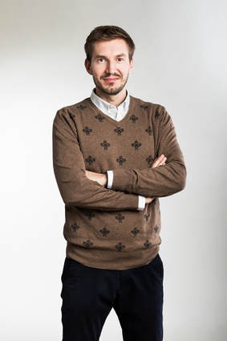
Fotky ze setkání
{kind=link}
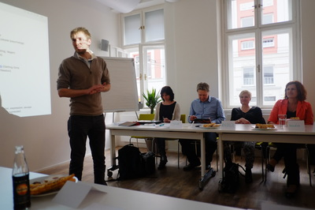
{kind=link}
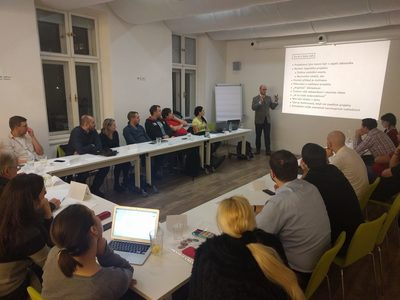
{kind=link}
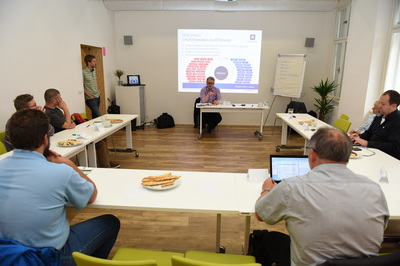
{kind=link}
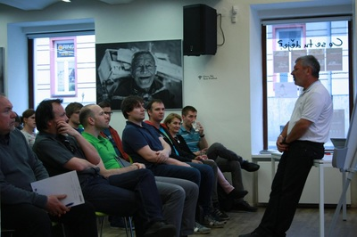
{kind=link}
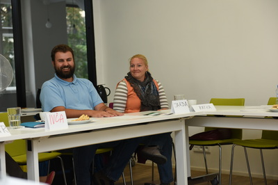
{kind=link}
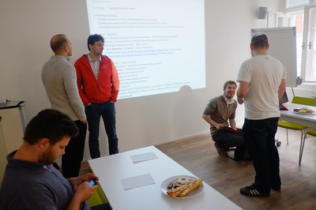
{kind=link}
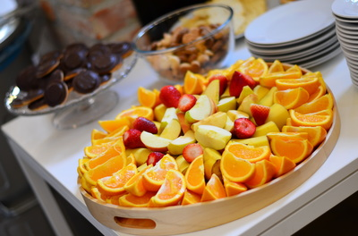
{kind=link}
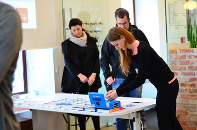
{kind=link}
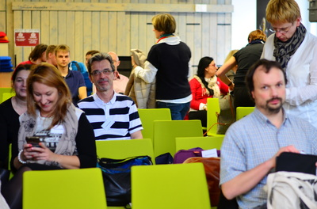
{kind=link}
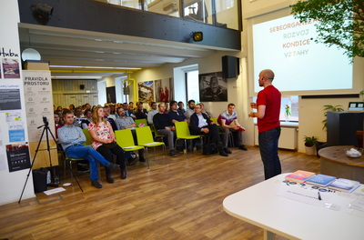
{kind=link}
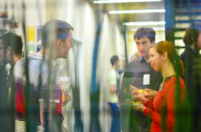
{kind=link}
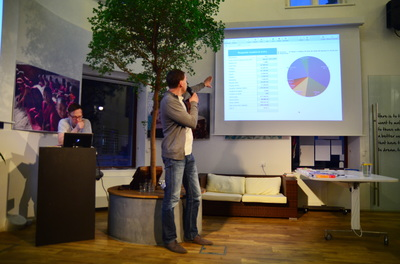
{kind=link}
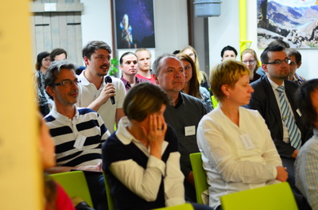
{kind=link}
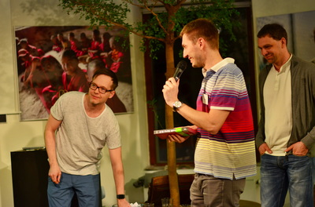
{kind=link}
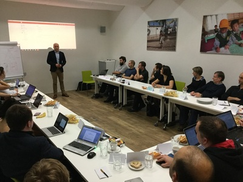
{kind=link}
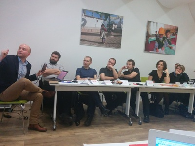
{kind=link}
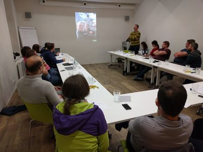
{kind=link}
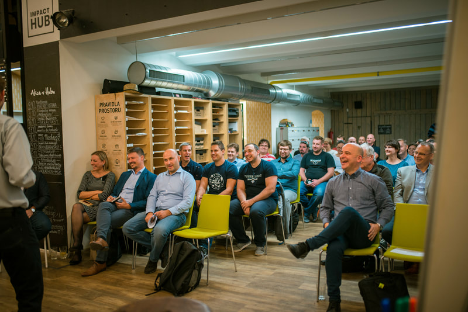
{kind=link}
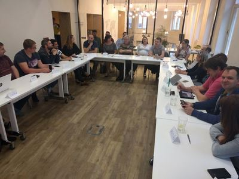
{kind=link}
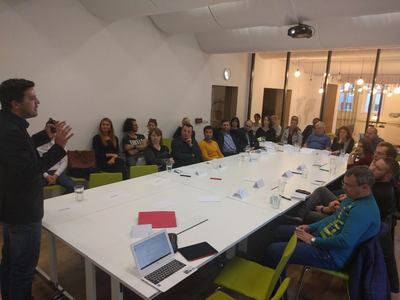
{kind=link}
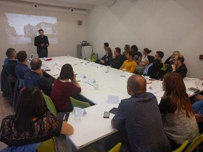
{kind=link}
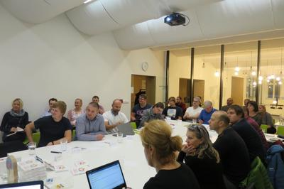
{kind=link}
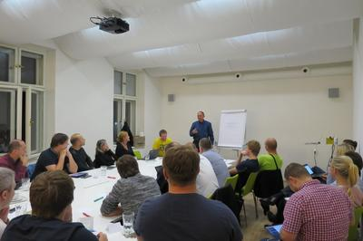
{kind=link}
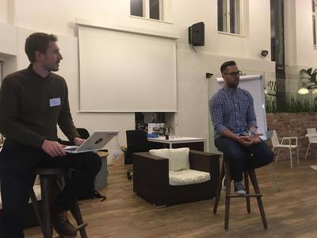
{kind=link}
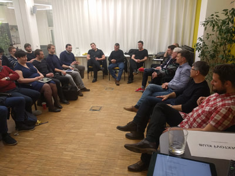
{kind=link}
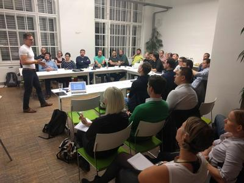
{kind=link}
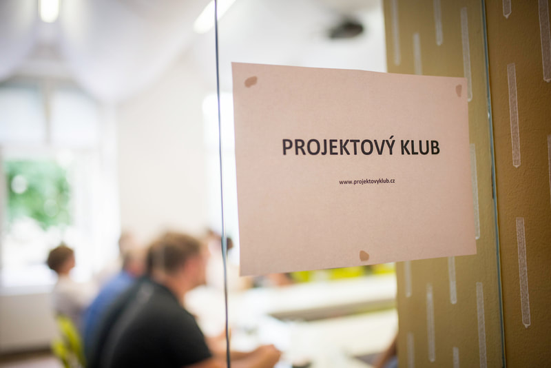
{kind=link}
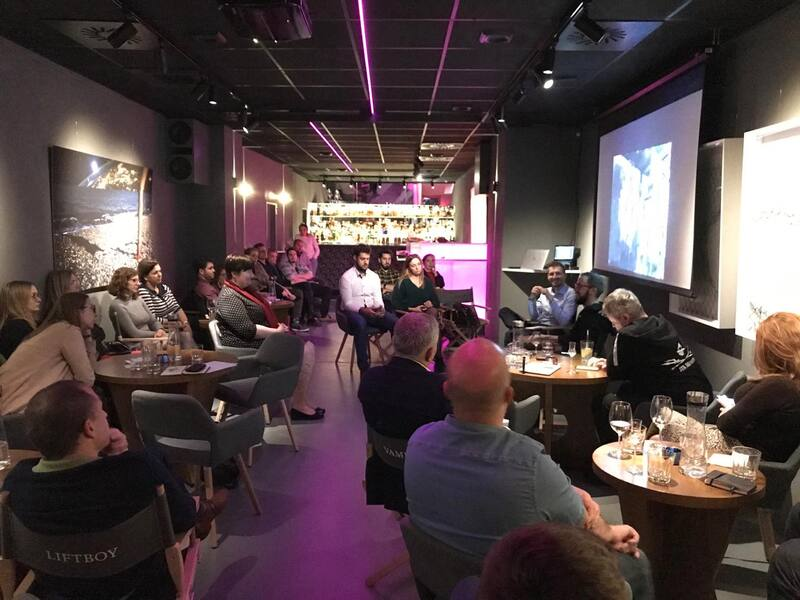
{kind=link}
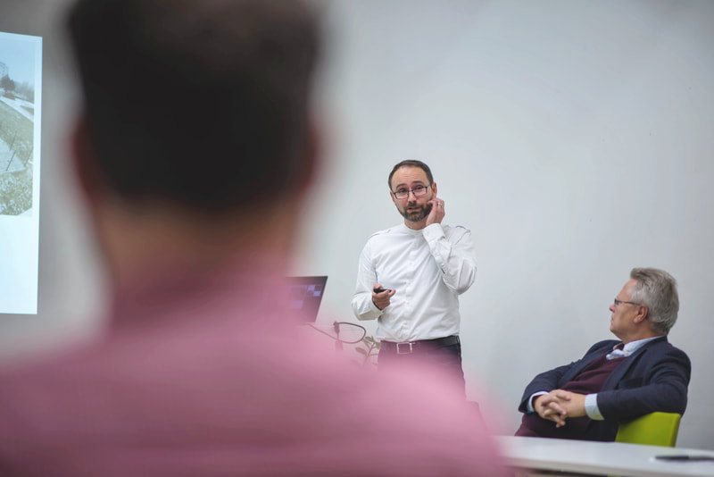
{kind=link}
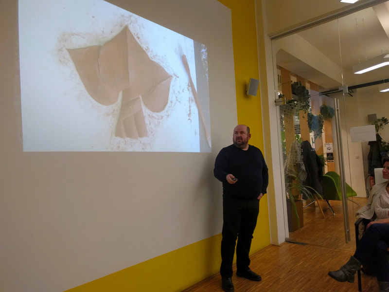
{kind=link}
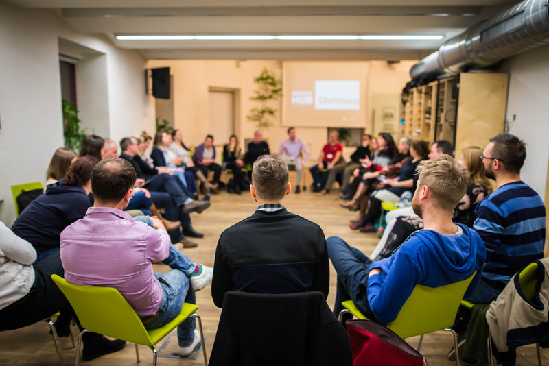
Proběhlá setkání
- AI by-pass & diskuze o budoucnosti projektových SW (17. 2. 2026, Online)
- PMO a AI — nasazení AI z pohledu šéfů PMO (11. 12. 2025, Online)
- Koučování a komunikace v projektech s Petrou Crhák (4. 11. 2025, Online)
- Hybridní projektové řízení s Pavlem Humpolcem (6. 10. 2025, Online)
- AI pro strategické řízení (11. 9. 2025, Online)
- Ivan Řehák: Lean zlepšování a lekce z mnoha mezinárodních projektů (28. 11. 2024, Online)
- Termíny pod kontrolou: Spolehlivost jako základ úspěchu (31. 10. 2024, Online)
- Spoluorganizace Setkání Projektového undergroundu v Ostravě (16. 10. 2024, host Igor Luhan)
- Snazší projekty díky Copilot a Project for the web (30. 9. 2024, host Petr Macek)
- S Václavem Novákem o projektovém řízení — VIP setkání (16. 4. 2024, host Václav Novák, M.L.Moran)
- Hybridní projektové řízení (11. 9. 2023, host Miroslav Krupa, U&Sluno)
- Projektové řízení v neziskových organizacích (5. 6. 2023, host Aneta Hašková & mix hostů z neziskových organizací, Futureum)
- Rozvoj projektového řízení ve firmách (16. 5. 2023, host Honza Slavík)
- Rozvoj talentů (26. 9. 2022, host Michal Martoch)
- Výběr technologií do IT projektu veřejné správy — záznam (18. 1. 2022, online, ve spolupráci s Česko.Digital a Contractors.cz)
- Strategický plán Ostravy-Jih (1. 11. 2021, host D. Adamčík)
- Životní cyklus stavby v 21. století (23. 9. 2021, hosté D. Martynek, M. Faltejsek, M. Pyszko)
- Panelová diskuze: Vendor lock-in v hlavní roli — záznam (15. 6. 2021, online, ve spolupráci s Česko.Digital a Contractors.cz)
- Právo pro strategické řízení firmy a eliminaci rizik — záznam (13. 4. 2021, Online, hosté Kirill Juran a Jaroslav Hroch ze Simple Law)
- Kruhové sdílení zkušeností (9. 3. 2021, Online)
- Online eventy — záznam (9. 2. 2021, hosté A. Barnová, M. Vasquez, Streamio, A. Šustková)
- IT projekty ve veřejné správě — záznam (26. 1. 2021, online, ve spolupráci s Česko.Digital a Contractors.cz)
- Nauč se pořádně plavat v MS Teams a M365 (1. 12. 2020, hosté K. Rubišarová, P. Macek, M. Langpaul, R. Honeš)
- Lidský potenciál a budování týmů (8. 9. 2020, host Michal Martoch, Talentwork)
- Projektový ekosystém Microsoftu (9. 3. 2020, hosté K. Rubišarová, M. Majerčík z Inzagi, J. Holišová z Vitesco)
- Cyklické metody plánování: „6+1", OKR (26. 2. 2020, INVENTI, hosté M. Mencl, M. Vlach)
- Setkání s Manažerem roku Adamem Liškou (3. 2. 2020, Impact Hub Ostrava, host Adam Liška, Bekaert)
- Motivační odměňování lidí v agilních týmech (13. 1. 2020, Impact Hub Ostrava, hosté J. Hajkr, T. Šetina)
- O budování brandu pohledem dvou osobností (20. 11. 2019, Eccentric Club, hosté J. Horák, V. Horký)
- Strategické projekty a jejich financování z veřejných zdrojů (4. 11. 2019, Impact Hub Ostrava, hosté M. Duda, Z. Karásek)
- Interní vs. externí projektový manažer (23. 10. 2019, Impact Hub Praha)
- Jak jsme aplikovali agilní přístup při řízení projektů v IT firmě (21. 10. 2019, Impact Hub Ostrava)
- Manu Chilaud o řízení výrobních podniků, projektů a vedení lidí (16. 9. 2019, HUB Ostrava)
- Založení a provoz Velkého Světa techniky v DOV (17. 6. 2019, HUB Ostrava, host J. Švrček)
- Organizace náročných eventů (12. 6. 2019, HUB Praha, hosté M. Kopřiva, Z. Rak)
- Projektové řízení v eshopech (22. 5. 2019, HUB Praha, hosté V. Košák, J. Kvasnička, M. Vachata)
- Čtvrtletní plánování, OKR a strategický posun (13. 5. 2019, HUB Ostrava, hosté M. Vlach, R. Mauler)
- Procesní řízení (10. 4. 2019, HUB Praha, hosté R. Vlach, P. Minář, R. Novotná)
- Projekty utvářející Ostravu (8. 4. 2019, HUB Ostrava, hosté T. Majliš, O. Roháč, D. Kotek, Z. Bajgarová)
- Emočně inteligentní leadership (7. 3. 2019, HUB Ostrava, host Radim Kudělka)
- Organizace eventů (27. 2. 2019, HUB Praha)
- Organizace eventů (18. 2. 2019, HUB Ostrava)
- Procesní řízení (7. 1. 2019, HUB Ostrava, hosté Robert Vlach, Pavel Minář, Procesoid)
- Můj systém řízení sebe, týmu, projektu nebo firmy (10. 12. 2018, HUB Ostrava)
- Plánování kapacit v multiprojektovém řízení (14. 11. 2018, HUB Praha, hosté J. Řeřicha, M. Répal, T. Zísler)
- Uplatňování agilních principů mimo IT (8. 11. 2018, HUB Ostrava, host J. Procházka)
- Implementace informačního systému (15. 10. 2018, HUB Ostrava, hosté B. Lubojacká, J. Konečný, J. Stoklasa)
- Aplikovaná inteligence, virtuální a rozšířená realita (10. 10. 2018, HUB Praha, hosté I. Gavenda, M. A. Ledgard)
- Rozvoj a změna firemní kultury (10. 9. 2018, HUB Ostrava, host M. Bednarz)
- Vedení lidí a generační rozdíly (11. 6. 2018, HUB Ostrava, host G. Potočková)
- Aputime — představení aplikace na řízení projektů a příběh startupu (14. 5. 2018, HUB Ostrava, host M. Lonský)
- Interim management vs. stálé řízení velké firmy (19. 4. 2018, HUB Ostrava, hosté T. Pastrňák, D. Molin, J. Poštulka)
- Jak rozhýbat problémový projekt (19. 3. 2018, HUB Ostrava, host J. Dvořáček)
- Designsprint a další metody kooperativního designu (19. 4. 2018, HUB Praha, host R. Hřebecký)
- Vědomá komunikace (22. 2. 2018, HUB Ostrava, host Radim Kudělka)
- Ze zákulisí seriálu Lajna (22. 1. 2018, HUB Ostrava, hosté V. Skórka, M. Tošenovský)
- Umělecké a kreativní projekty (17. 1. 2018, HUB Praha, hosté A. Rúčková, R. Nekuda, M. Petrus)
- Vánoční projektové pivo (11. 12. 2017, restaurace Levský)
- Jak postupně zlepšovat projektovou kulturu ve firmě (30. 11. 2017, HUB Praha, hosté K. Dytrych Freelo, A. Vejsadová, M. Vlach)
- Startupy & Crowdfunding (13. 11. 2017, HUB Ostrava, host M. Peřina)
- Jak nejlépe vést tým IT vývojářů (11. 10. 2017, HUB Praha, host R. Pichlík)
- Prodejní dovednosti a metoda trojjediného mozku (9. 10. 2017, HUB Ostrava, host V. Orlita)
- Umělecké a kreativní projekty (18. 9. 2017, HUB Ostrava, hosté A. Čuba, D. Vlasakudis)
- Jak se organizují MS v ledním hokeji v Ostravě (12. 6. 2017, HUB Ostrava, hosté P. Handl, R. Mecová)
- Jak se organizují Dny NATO v Ostravě (5. 6. 2017, HUB Ostrava, host Z. Pavlačík)
- Quality Assurance při vývoji SW (15. 5. 2017, HUB Ostrava, host V. Barta)
- Marketing Festival a další projekty Jindřicha Fáborského (3. 4. 2017, HUB Ostrava, host J. Fáborský)
- Agilní produktový vývoj v LMC (20. 3. 2017, HUB Ostrava, hosté A. Hazdra, M. Hlavina)
- Produktový management (20. 2. 2017, HUB Ostrava, host J. Chomát)
- Mediace a konflikty (23. 1. 2017, HUB Ostrava, hosté T. Zmija, J. Záchová)
- O měkkých dovednostech neformálně (5. 12. 2016, Levský, Ostrava)
- Kouzlo papírového notesu v digitální době + Expanze do zahraničí (8. 11. 2016, HUB Praha)
- Projektový software v různých podobách 2016 (17. 10. 2016, HUB Ostrava)
- Změny projektového prostředí ve firmě (26. 9. 2016, HUB Ostrava, host L. Havlásek)
- Lidský faktor při řízení projektů (20. 6. 2016, HUB Ostrava, host J. Brousková)
- Multiprojektové prostředí (16. 5. 2016, HUB Ostrava, host M. Šmíra, Goldratt CZ)
- Jan Melvil o projektech (18. 4. 2016, HUB Ostrava)
- Jak řídím své projekty (21. 3. 2016, HUB Ostrava)
- Jak nastavit systém osobní produktivity (22. 2. 2016, HUB Ostrava)
- Motivace a změna chování při řízení projektu (25. 1. 2016, HUB Ostrava)
- Volný networking (7. 12. 2015, Levský, Ostrava)
- Jak zlepšit součinnost zadavatele nebo klienta (19. 10. 2015, HUB Ostrava)
- Kariérní rozvoj projektového manažera (16. 9. 2015, HUB Ostrava)
- Rizika vs. příležitosti — čemu věnovat více pozornosti (22. 6. 2015, HUB Ostrava)
- Dotahování projektů (11. 5. 2015, HUB Ostrava)
- Prioritizace a Paretovo pravidlo v praxi (20. 4. 2015, HUB Ostrava)
- Výběr členů do týmu (30. 3. 2015, HUB Ostrava)
- Spolupráce na dálku (17. 2. 2015, HUB Ostrava)
- Co si odnést z agilních metod? (26. 1. 2015, HUB Ostrava)
- SW na podporu řízení projektů (15. 12. 2014, HUB Ostrava)
- Poskytování zpětné vazby (25. 11. 2014, HUB Ostrava)
- Volná zábava (10. 5. 2012, Fungolf, Ostrava)
- Svoboda firem (29. 2. 2012, VTPO Ostrava)
- Co jsem se naučil v praxi (17. 1. 2012, VTPO Ostrava)
- Srovnání standardů (15. 11. 2011, VTPO Ostrava)
- Prince2 a PMI (27. 9. 2011, VTPO Ostrava)
- Banka projektů (7. 6. 2011, VTPO Ostrava)
- Případové studie (19. 4. 2011, VTPO Ostrava)
- MBTI (17. 3. 2011, VTPO Ostrava)
- Vyjednávání (1. 2. 2011, PI Ostrava)
- Kritický řetěz a GTD (21. 12. 2010, firma AWT, Ostrava)
- Plánování projektů (16. 11. 2010, firma Torquis, Ostrava)
- Řízení porad (21. 9. 2010, firma AWT, Ostrava)
- Komunikace (18. 5. 2010, firma Hertin, Ostrava)
- Neúspěšné projekty (13. 4. 2010, klub Parník, Ostrava)
- Úvodní setkání (24. 2. 2010, hotel Maria, Ostrava)